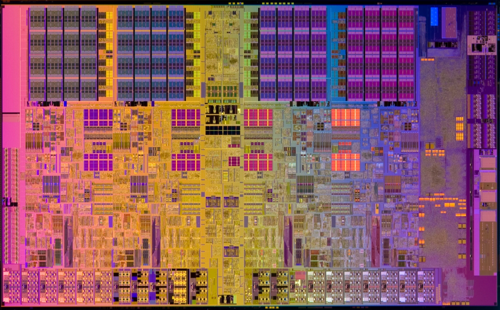

A DEVELOPER'S FIELD NOTES
만들고, 배우고,
기록합니다.
AI 모델이 실제 서비스가 되기까지.
직접 부딪히며 배운 기술과 개발의 과정을 남깁니다.
ENGINEERING / EXPLORATION FIELD NOTES
DATA→MODEL→SERVICE
최근 기록
NOTES & PROJECTS / 05DEVELOPMENT NOTE 컴퓨터 구조
CPU 구조 및 동작
ALU, 제어 장치, 레지스터부터 명령어 사이클과 인터럽트까지.

개발 노트 컴퓨터구조
CPU 구조 및 동작
ALU, 제어 장치, 레지스터부터 명령어 사이클과 인터럽트까지.
프로젝트 VibeCoding · Prompting
Vibe Coding으로 PDF 하이라이트 추출기 구현
PDF의 하이라이트를 추출해 Obsidian 노트로 옮기는 도구를 만든 경험.
프로젝트 모델API · FastAPI · MLOps
음성 생성모델 API 구현
TorchServe와 FastAPI를 연결해 음성 생성 모델을 서비스로 제공한 과정.
프로젝트 AI모델제작 · MLOps
다국어, 다화자 음성 생성 모델 개발
다화자·다국어 음성 모델의 데이터 수집부터 훈련, 평가까지의 개발 기록.
프로젝트 Mediapipe · Unity · MotionCapture
단일 카메라 기반 모션 캡처 구현
Mediapipe의 관절 추정을 Unity 캐릭터의 자연스러운 움직임으로 연결하기.
검색 결과가 없습니다. 다른 단어로 찾아보세요.